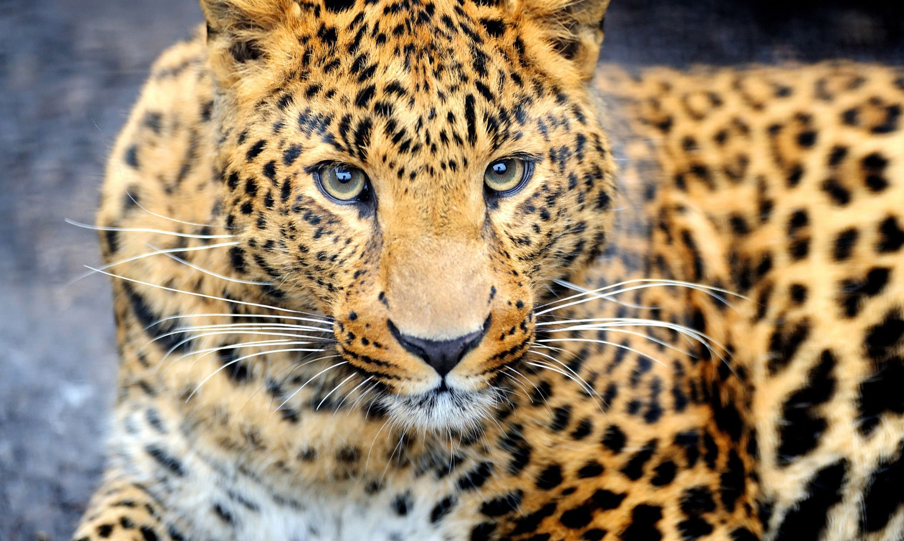
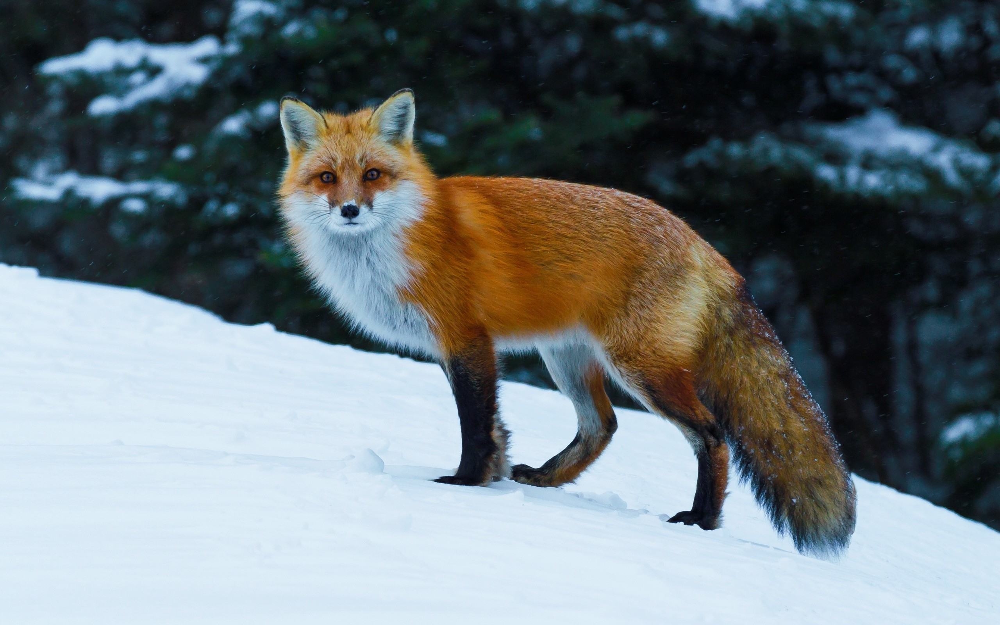
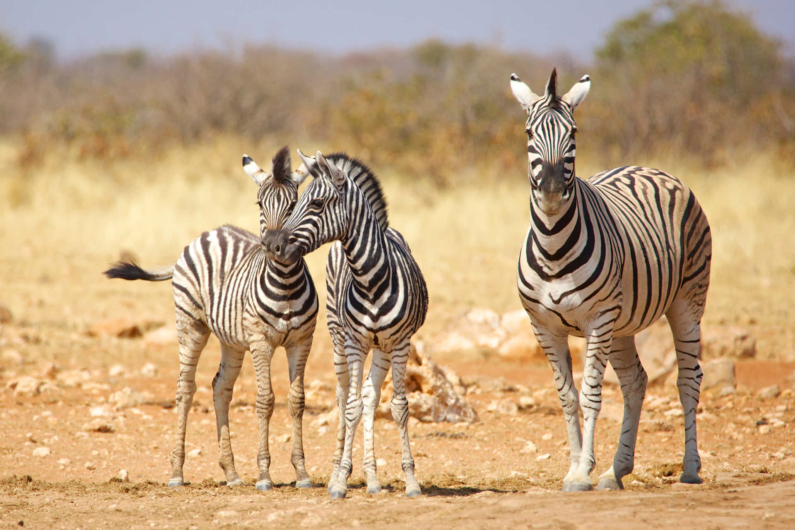
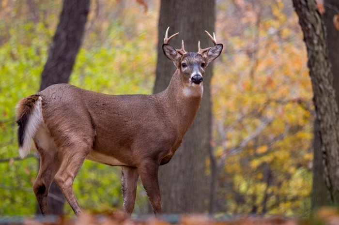
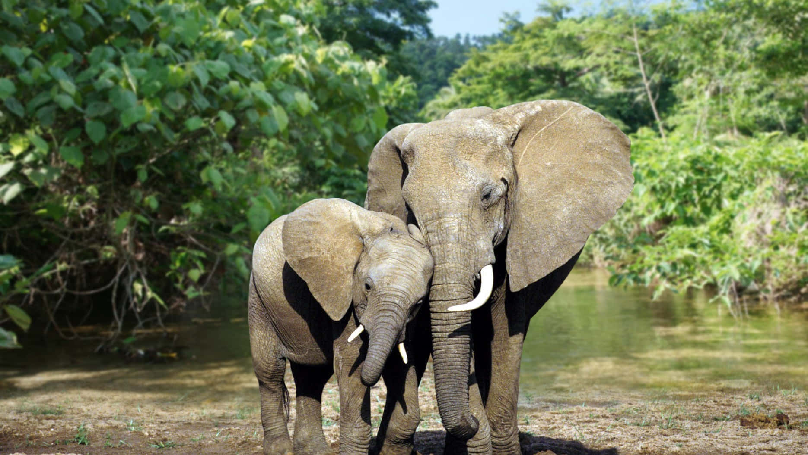
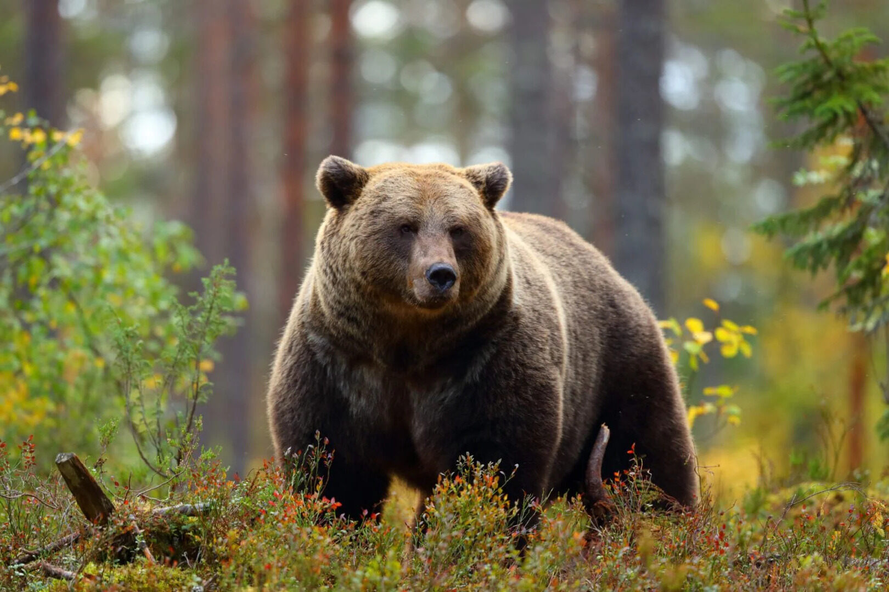

Tiger
The tiger is a large cat and a member of the genus Panthera native to Asia. It has a powerful, muscular body with a large head and paws, a long tail and orange fur with black, mostly vertical stripes. It is traditionally classified into nine recent subspecies, though some recognise only two subspecies, mainland Asian tigers and the island tigers of the Sunda Islands. Throughout the tiger's range, it inhabits mainly forests, from coniferous and temperate broadleaf and mixed forests in the Russian Far East and Northeast China to tropical and subtropical moist broadleaf forests on the Indian subcontinent and Southeast Asia.
More DetailsFox
Foxes are small-to-medium-sized omnivorous mammals belonging to several genera of the family Canidae. They have a flattened skull; upright, triangular ears; a pointed, slightly upturned snout; and a long, bushy tail. Twelve species belong to the monophyletic "true fox" group of genus Vulpes. Another 25 current or extinct species are sometimes called foxes – they are part of the paraphyletic group of the South American foxes or an outlying group, which consists of the bat-eared fox, gray fox, and island fox.
More DetailsZebra
Zebras are African equines with distinctive black-and-white striped coats. There are three living species: Grévy's zebra, the plains zebra, and the mountain zebra. Zebras share the genus Equus with horses and asses, the three groups being the only living members of the family Equidae. Zebra stripes come in different patterns, unique to each individual. Several theories have been proposed for the function of these patterns, with most evidence supporting them as a deterrent for biting flies.
More DetailsDeer
A deer or true deer is a hoofed ruminant ungulate of the family Cervidae. Cervidae is divided into subfamilies Cervinae and Capreolinae. Male deer of almost all species, as well as female reindeer, grow and shed new antlers each year. These antlers are bony extensions of the skull and are often used for combat between males. The musk deer of Asia and chevrotains of tropical African and Asian forests are separate families that are also in the ruminant clade Ruminantia; they are not especially closely related to Cervidae.
More DetailsElephant
Elephants are the largest living land animals. Three living species are currently recognised: the African bush elephant, the African forest elephant, and the Asian elephant. They are the only surviving members of the family Elephantidae and the order Proboscidea; extinct relatives include mammoths and mastodons. Distinctive features of elephants include a long proboscis called a trunk, tusks, large ear flaps, pillar-like legs, and tough but sensitive grey skin.
More DetailsRed Panda

The red panda, also known as the lesser panda, is a small mammal native to the eastern Himalayas and southwestern China. It has dense reddish-brown fur with a black belly and legs, white-lined ears, a mostly white muzzle and a ringed tail. Its head-to-body length is 51–63.5 cm with a 28–48.5 cm tail, and it weighs between 3.2 and 15 kg. It is well adapted to climbing due to its flexible joints and curved semi-retractile claws. The red panda was formally described in 1825.
More DetailsBear
Bears are carnivoran mammals of the family Ursidae. They are classified as caniforms, or doglike carnivorans. Although only eight species of bears are extant, they are widespread, appearing in a wide variety of habitats throughout most of the Northern Hemisphere and partially in the Southern Hemisphere. Bears are found on the continents of North America, South America, and Eurasia.
More Details